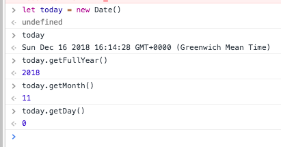
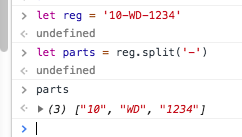

This lab continues our exploration of Javascripr fundamentals, this time focusing on the behavioral side. The topics covered include function definition, method definition, and constructor functions.
Unzip this archive and use it as the starting point for the lab exercises.
The content of lab002/functions.js should look familiar - it's from the previous lab exercise. We will expand this file in the next few sections.
Create a Git repository in lab02:
$ git init
$ git add -A
$ git commit -m "Initial structure"Suppose we want a function that allows us add an entry to the previous_owners property of aCar. Copy the following function expression, placing it at the end of functions.js:
let addPreviousOwner = function(car, newName, newAddress) {
let o = { name : newName, address : newAddress } ;
car.previous_owners.push(o) ;
} ;To test the above function, place the following statements after the function expression:
addPreviousOwner(aCar,'Jim Nugent','3 Lower Road') ;
let last = aCar.previous_owners.length - 1;
console.log(aCar.previous_owners[last].name) ;Run it, as follows:
$ node functions.jsThe log statement displays 'Jim Nugent'.
Assume we only need to record the three most recent previous owners of a car. Trying to add a fourth person should cause the first previous owner to be removed from the record, leaving the second owner as the new first entry in the array. A similar outcome should happen on adding a fifth and subsequent person - the array should only ever have a maximum of three entries. You are required to change the implementation of the addPreviousOwner function to meet this requirement.
Hint: The shift method removes the first entry in an array, e.g. arrayRef.shift().
To test your solution, add the following additional lines to the bottom of functions.js:
addPreviousOwner(aCar,'Rachel Fleming','4 Upper Road')
console.log(aCar.previous_owners[2].name)
console.log(aCar.previous_owners[0].name) The two log statements should display the names 'Rachel Fleming' and 'Sheila Dwyer'.
(See solution 01 for the completed code.)
After completing your solution, update the git repository:
$ git add -A
$ git commit -m "addPreviousOwner function"The addPreviousOwner function should really be a method of aCar. Make the following adjustment to the aCar object:
let aCar = {
.
.
.
addPreviousOwner : function(newName,newAddress) {
let o = { name : newName, address : newAddress } ;
if (this.previous_owners.length === 3) {
this.previous_owners.shift() ;
}
this.previous_owners.push(o) ;
},
previous_owners : [ . . . as before . . . ],
. . . as before . . .
}; // end aCar Note, the keyword 'this' is used inside the method to reference the containing object (aCar). You should now remove the old addPreviousOwner function expression and replace all calls to it with method calls, as follows (the 'console.log' statements remain unchanged):
aCar.addPreviousOwner('Jim Nugent','3 Lower Road') ;You are required to add a new method to aCar, called newOwner. The method's arguments are the name and address of the new owner of the car. The method should add the current owner details to the list of previous owners and then assign the new owner details to the current owner properties.
let aCar = {
owner : 'Joe Bloggs', // Current owner details
address : '3 Walkers Lane',
.
.
.
} ;Test your method implementation by adding the following statements to the end of the file:
aCar.newOwner('Donal Dunne','5 Kings Way') ;
console.log('Sold by: ' + aCar.previous_owners[2].name) ;
console.log('Bought by: ' + aCar.owner) ;The log statements should display:
Sold by: Joe Bloggs Bought by: Donal Dunne
(See solution 02 for the completed code.)
After completing your solution, update the git repository:
$ git add -A
$ git commit -m "Demonstrate methods"Our methods so far returned nothing (undefined). It is generally better to return something explicitly, even if the caller may not actually use it.
Add the following method to aCar:
let aCar = {
. . . . .
howOld : function() {
let today = new Date();
let thisYear = today.getFullYear() ;
return thisYear - (this.registration.year + 2000) ;
},
.
.
.
}[The Date feature used in the above method is useful. You can experiment with it in the Google Chrome Developer tools, as illustrated below:

]
The howOld function computes the car's age, in years. To test it, add the following log statement at the end of the file and run it:
console.log(`Car age: ${ aCar.howOld() } years.`) ;[The above log statement is using string template syntax from ES^. It's an alternative to string concatenation, which is quite cumbersome.]
Some methods return a boolean result. For example, add a method that determines whether a car has a certain feature, as follows:
let aCar = {
. . . . .
addPreviousOwner : function(.....) {
. . . . .
},
hasFeature : function(query) {
let result = false;
this.features.forEach(function(feature) {
if (query.toUpperCase() === feature.toUpperCase() ) {
result = true ;
}
})
return result ;
},
.
.
.
}[For robustness the method above is made case-insensitive by temporarily converting any string to upper-case.]
To test this method add the following to the bottom of the file and run the code:
console.log(`Alarm: ${aCar.hasFeature('alarm')}.` ) ;You are required to implement a method that determines if a particular person (based on name only) was a previous owner of the car. Test your implementation by adding the following to the end of the file:
let name = 'Jim Nugent'
console.log(`${name} ? ${aCar.wasOwnedBy(name)}.` )
name = 'Paul Minihan'
console.log(`${name} ? ${aCar.wasOwnedBy(name)}.` ) ;The log statements should display:
Jim Nugent ? true
Paul Minihan ? falseSee [Solution 03 for the correct implementation.]
After completing a solution, update the git repository:
$ git add -A
$ git commit -m "Method responses"Because searching an array for a matching entry is such a common requirement, the Array find method is provided. Change the implementation of hasFeature to the following:
.
.
.
hasFeature : function(query) {
let match = this.features.find(function(element) {
return query.toUpperCase() === element.toUpperCase() ;
});
return match === undefined ? false : true
},
.
.
.find returns the matching array entry, if found; otherwise it returns undefined. The ternary operator (?:) is also used above for convenience. See here for more information on find.
You are required to refactor the wasOwnedBy method to avail of the Array find feature.
After completing a solution, update the git repository:
$ git add -A
$ git commit -m "Refactoring"The literal object syntax used in the previous sections is inefficient when creating multiple car objects. A constructor function should be used instead.
Creating a new file in lab002. called constructor.js. and paste in this code:
function Car(name,address,make,model,cc,registration ) {
this.owner = name
this.address = address
this.previous_owners = [ ]
this.type = { make : make, model : model, cc : cc }
this.features = ['Parking assist', 'Alarm', 'Tow-bar'];
this.addPreviousOwner = function(newName,newAddress) {
let o = { name : newName, address : newAddress }
if (this.previous_owners.length === 3) {
this.previous_owners.shift()
}
this.previous_owners.push(o)
};
this.wasOwnedBy = function(query) {
let match = this.previous_owners.find(function(element) {
return element.name.toUpperCase() === query.toUpperCase() ;
});
return match == undefined ? false : true
};
}
let car1 = new Car('Joe Bloggs','3 Walkers Lane',
'Toyota','Corolla',1.8,
'10-WD-1058') ;
car1.addPreviousOwner( 'Pat Smith', '1 Main Street') ;
car1.addPreviousOwner( 'Pat Smith', '1 Main Street') ;
car1.addPreviousOwner( 'Sheila Dwyer',
'2 High Street') ;
console.log(`Pat Smith ? ${car1.wasOwnedBy('Pat Smith')}.` ) ;Note, this code is not yet complete. Take time to study it and then run it:
$ node constructor.js Update the git repository:
$ git add -A
$ git commit -m "Added initial car constructor"In the previous section we declared a newOwner method. Using that implementation as a guide, you are required to add the method to the Car constructor. Test it by adding the following to the end of constructor.js:
car1.newOwner('Donal Dunne','5 Kings Way') ;
console.log('Sold by: ' + car1.previous_owners[2].name)
console.log('Bought by: ' + car1.owner) The log statements should display the seller as 'Joe Bloggs' and buyer as 'Donal Dunne'.
(See Solution 04 for the completed code.)
Update the git repository:
$ git add -A
$ git commit -m "newOwner added to constructor"The registration details are not yet supported. While this information is stored internally as an object structure, we don't need to expose this in the constructor's interface. Using a simple string as the constructor parameter seems more natural, e.g. new Car(....,'10-WD-1058'). Consequently, the constructor function must parse the registration string and place the elements in the nested object. The predefined String split method can help here. You can experiment with it in Chrome's Developer Tools console, as illustrated below:

Update the Car constructor to make use of this feature, as follows:
function Car(name, address, make, model, cc, registration) {
.
.
.
let regParts = registration.split('-')
this.registration = {
year : parseInt(regParts[0]),
county : regParts[1],
number : regParts[2]
};
}[ The parseInt() function converts a numeric string to an integer.]
To prove the new code works, add the howOld method, as follows:
function Car(... as before ...) {
.
.
.
this.howOld = function() {
let today = new Date();
let thisYear = today.getFullYear();
return thisYear - (this.registration.year + 2000);
};
this.newOwner = function(....) { . . . . } ;
. . . . .
}and add this test line to the end of the file:
console.log(`Car age: ${car1.howOld()}` ) ;The log statement should display 'Car age: 9'.
Update the git repository:
$ git add -A
$ git commit -m "Add registration support and howOld method" let addPreviousOwner = function(car,newName,newAddress) {
let o = { name : newName, address : newAddress } ;
if (car.previous_owners.length === 3) {
car.previous_owners.shift() ;
}
car.previous_owners.push(o) ;
} ; let aCar = {
owner : 'Joe Bloggs',
address : '3 Walkers Lane',
newOwner : function(name, address) {
this.addPreviousOwner(this.owner,this.address) ;
this.owner = name ;
this.address = address ;
},
. . . . . . . ..
} ; let aCar = {
. . . . . .
wasOwnedBy : function(name) {
let result = false ;
this.previous_owners.forEach(function(owner) {
if (name.toUpperCase() === owner.name.toUpperCase()) {
result = true ;
}
}) ;
return result ;
},
. . . . . .
} ;function Car(name,address,make,model,cc,registration) {
.
.
.
this.newOwner = function(newName,newAddress) {
this.addPreviousOwner(this.owner,this.address)
this.owner = newName
this.address = newAddress
};
this.addPreviousOwner = function(.....) {
.
.
.
};